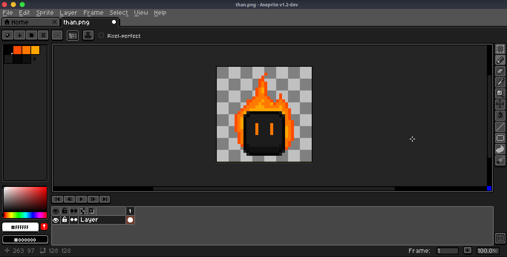
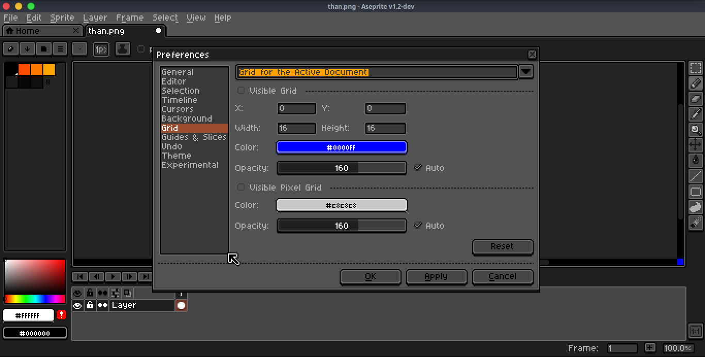
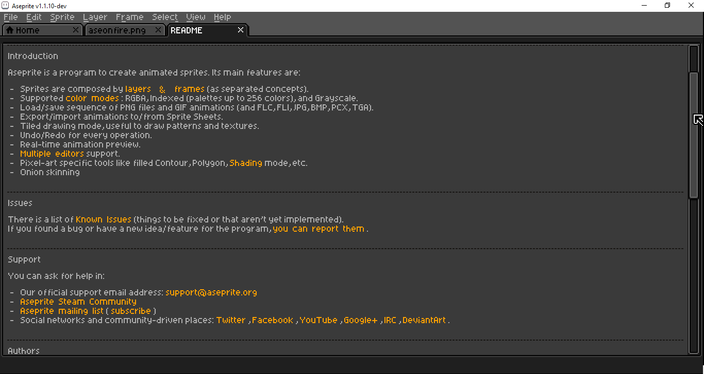
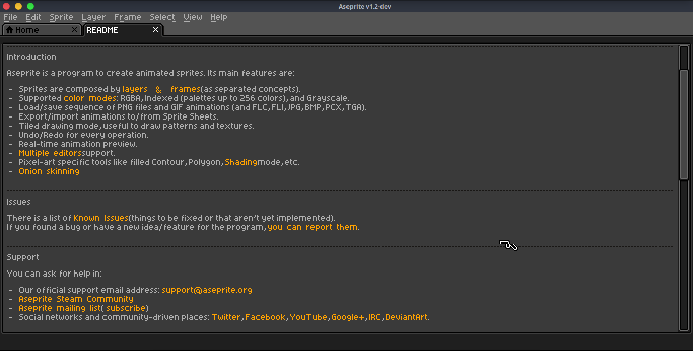

than is a dark theme for Aseprite. It is based on the default theme by Ilija Melentijevic & David Capello. The current version is compatible with Aseprite v1.2 b10 or later.
For older versions of Aseprite, use than v1.2.3 (aseprite v1.2b8 and b9) or than v1.1.1 (older build).




Download latest version of than
Open Aseprite
Go to Edit/Preferences.
Select Extensions category in the left column.
Click Add Extension, find and select the zip file you've just downloaded then click OK.
Select Themes category in the right column, choose than theme then click Select button.
Restart Aseprite to make the change happen.
Download than v1.2.3 from the link above.
Open Aseprite.
Open Edit\Preferences\Theme, choose one of the 2 themes folder directory paths on top of the list then click Open Folder button.
Copy the file you've just downloaded here and extract it.
Close Preferences dialog and reopen it, choose than from the list.
Click Select then click OK.
Restart Aseprite to make the change happen.